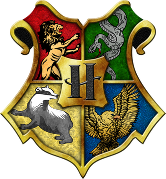

<ion-header>
  <ion-toolbar  color="dark">
    <ion-title>Conhecendo Horgwats</ion-title>
    <ion-buttons slot="start">
      <ion-back-button  text="" defaultHref="home"></ion-back-button>
    </ion-buttons>
  
  </ion-toolbar>
</ion-header>

<ion-content>
  <br><br><br>
  
  <br><br><br>  
  <ion-grid>
    <ion-row>
    <ion-col>
      <ion-button mode="ios" class="grifinoria" router-direction="root" routerLink="/buscar/personagem" fill="outline" size="large" expand="block">Grifinória</ion-button>

    </ion-col>
    <ion-col>
      <ion-button mode="ios" class="sonserina" router-direction="root" routerLink="/buscar/personagem" fill="outline" size="large" expand="block">Sonserina</ion-button>

    </ion-col>
    <ion-col>
      <ion-button mode="ios" class="lufalufa" router-direction="root" routerLink="/buscar/personagem" fill="outline" size="large" expand="block">Lufa Lufa</ion-button>

    </ion-col>
    <ion-col>
      <ion-button mode="ios" class="corvinal"  router-direction="root" routerLink="/buscar/personagem" fill="outline" size="large" expand="block">Corvinal</ion-button>

    </ion-col>
  </ion-row>
  </ion-grid>
  

</ion-content>
